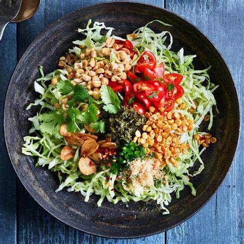

Tea Leaf Salad (Lahpet Thoke)
Home

Description
A vibrant Burmese salad made with fermented tea leaves, crunchy nuts, and fresh vegetables.
Ingredients
2 tbsp fermented tea leaves
1/4 cup chopped cabbage
2 tbsp fried peas
1 tbsp roasted peanuts
1 tbsp sesame seeds
2 garlic cloves, fried
1 tomato, chopped
1 green chili, sliced
1 tsp lime juice
Salt to taste
Directions
Mix all dry ingredients in a bowl.
Add tea leaves, lime juice, and salt.
Toss everything together and serve fresh.